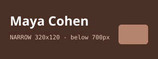

Third-year student at Ruppin. I already write C# and Python; this semester I am finding out
what the browser does with the text I send it.

About me
I came to programming through a statistics course I did not enjoy and a data set I did. I
like problems where the answer is checkable, which is why I have never much liked design —
and why this semester is going to be uncomfortable.
I am writing this page in the first lab of the course, from an empty file, and it is
the first commit of the thing I will be examined on.
What I am learning
My courses this semester
Course
Day
Room
Front-End Web Development
Tuesday
Lab 3
Databases
Wednesday
301
Statistics for Information Systems
Thursday
210
Reading notes: what the browser actually does
Written on , after the second lab.
The browser asks for one text file, turns the name into an address first, encrypts the
connection, gets text back, parses it into a tree, and paints. Six words: request, DNS,
TLS, response, parse, paint.
Three things I got wrong in the first hour: I opened the page by double-clicking it and
wondered why the path to my image broke; I used h4 for a subheading because
h2 looked too big; I wrote three br tags to push a paragraph
down the page.
What I read this week
MDN, the label element: why for points at an id.
MDN, the table element: caption, thead, scope.
WebAIM on skip links, and why the first Tab on a page matters.